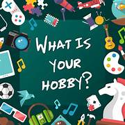

Hello, my name is piyush chaturvedi and I am writing to introduce myself. My interests include photography, art, and music. I enjoy making things out of clay and woodworking. I am a native of the United States and have been here for over 20 years now. I grew up in varanasi where I attended school. After high school, I moved to Delhi where I went to college at KIET group of institutes. During college, it was not easy for me to make friends because I was shy and quiet. It wasn’t until after college when I started working at Accenture, that my relationships with others changed for the better. At work, I was able to open up more as well as learn how to communicate better with others by using body language and tone of voice rather than words alone. This resulted in me being promoted from a part-time employee into an assistant manager position within two years of working there full-time!

Everyone has a hobby and so do I. My hobby is cooking. I love to cook. At first, I used to help my mom in her cooking. But later I found that I really enjoy cooking. I asked my mom to teach me that, and she was really happy about this. Then she teaches me and I learned pretty much everything about cooking. I don’t get enough time to cook but I try my best. Everyone says that my cooked food is really delicious and I think so also. I wish to become a popular cooking teacher in the future. People should learn so many cooking techniques that I know now. I watch YouTube videos regularly which helps me to gain so much knowledge on different types of cooking. Once I cook for my cousin who came from America and he was amazed after eating that food. That day was really inspiring for me, everybody praised my dish and then I never looked back and never give up.
I am a people person. I love meeting new people and learning about their lives and their backgrounds. I can almost always find common ground with strangers, and I like making people feel comfortable in my presence. I find this skill is especially helpful when kicking off projects with new clients. In my previous job, my clients’ customer satisfaction scores were 15 percent over the company average.
I would characterize it as kind and altruistic, always ready to help someone. People generally enjoy my company, and I enjoy company of other people. I’ve always felt an inner calling to help, to do something for others, and it is also one of the reasons why I picked social work for my studies, and try now to get a job as a case manager. Of course, my personality has also some weaknesses. I can get emotional easily, when confronted with extreme suffering or inequality around me, and this is something I actually have to work on, because I know I will be confronted with such scenes in my new job.